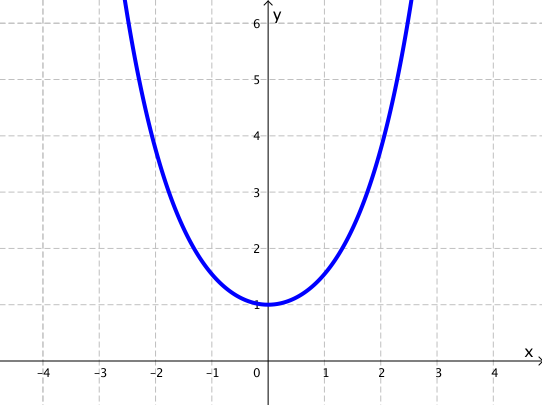
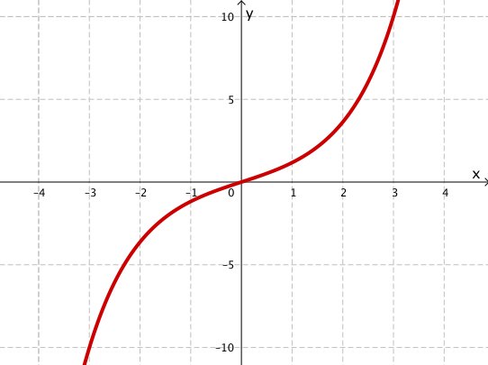
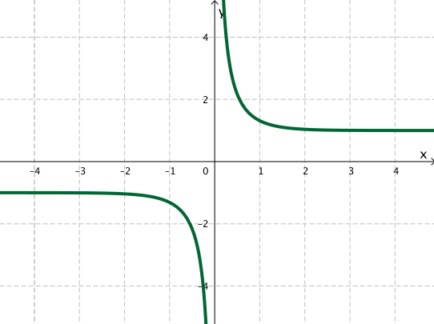
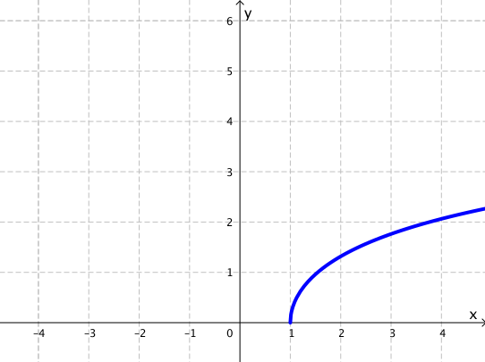
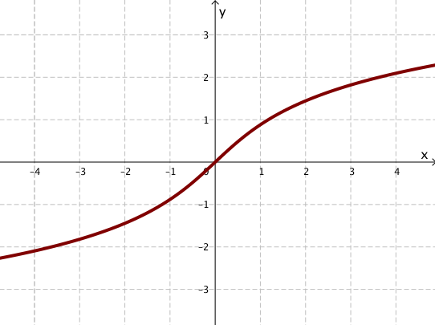
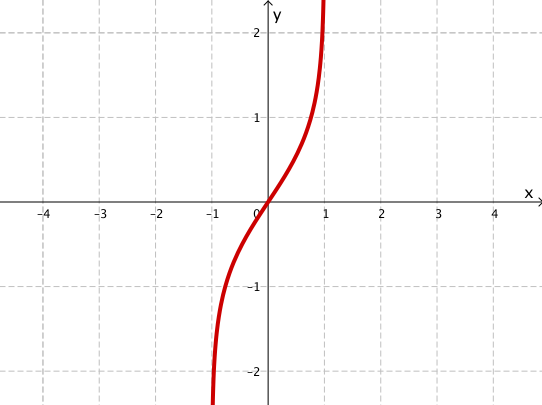

Calculus &
Linear Algebra II
Chapter 4
4 Hyperbolic functions
By the end of this section, you should be able to answer the following questions:
- What is the definition of the sinh and cosh functions?
- What is the definition of the inverse hyperbolic functions?
- What are the derivatives and anti-derivatives of these functions?
- How are hyperbolic functions used in the catenary problem?
4.1 Properties of hyperbolic functions
We define the functions $\cosh\left(x\right) $ and $\sinh\left(x\right) $ by
| $\cosh\left(x\right) $ | $=$ | $\ds \frac{e^x+e^{-x}}{2}$ |
| $\sinh\left(x\right) $ | $=$ | $\ds \frac{e^x-e^{-x}}{2}$ |
We can check by direct calculation that \[ \cosh^2 \left(x\right) - \sinh^2\left(x\right)=1. \] Compare this with the the familiar identity $\cos^2 \left(\theta\right) + \sin^2\left(\theta\right)=1$ for trigonometric functions.
4.1 Properties of hyperbolic functions
We can check by direct calculation that \[ \cosh^2 \left(x\right) + \sinh^2\left(x\right)=1. \] Compare this with the the familiar identity $\cos^2 \left(\theta\right) + \sin^2\left(\theta\right)=1$ for trigonometric functions. This identity allows us to parametrise a unit circle. By setting $x(t) = \cos(t), y(t) = \sin(t),$ we get the equation of the unit circle \[ \cos^2 \left(t\right) + \sin^2\left(t\right)=x^2 + y^2 = 1. \]
4.1 Properties of hyperbolic functions
If we set $x(t) = \cosh(t)$ and $y(t) = \sinh(t),$ this gives a parametrisation for a hyperbola (only the right branch), since \[ \cosh^2 \left(t\right) - \sinh^2\left(t\right)=x^2-y^2=1, \] which is the equation of a hyperbola. This is why we call these functions “hyperbolic functions”.
4.1 Properties of hyperbolic functions
These hyperbolic functions satisfy properties similar to their trigonometric counterparts. For example
| $\ds\frac{d}{dx} \big(\cosh\left(x\right) \big) $ | $=$ | $\ds \frac{e^x-e^{-x}}{2} = \sinh\left(x\right)$ |
| $\ds\frac{d}{dx} \big( \sinh\left(x\right) \big) $ | $=$ | $\ds \frac{e^x+e^{-x}}{2} = \cosh\left(x\right) .$ |
Note: $\cosh(0) = 1$, $\cosh(x) \leq 1$, $\cosh(x)$ is an even function; $\sinh(0) = 0$, $\sinh(x)$ is an odd function.
4.1 Properties of hyperbolic functions
We also define
| $\ds\tanh\left(x\right) $ | $=$ | $\ds \frac{\sinh\left(x\right)}{\cosh\left(x\right)} = \frac{1-e^{-2x}}{1+e^{-2x}}, \quad \abs{\tanh\left(x\right)}\lt 1,$ |
| $\ds\coth\left(x\right)$ | $=$ | $\ds \frac{\cosh\left(x\right)}{\sinh\left(x\right)}.$ |
Graph of $\cosh\left(x\right)$
Graph of $\sinh\left(x\right)$
Graph of $\tanh\left(x\right)$

Graph of $\coth\left(x\right)$
4.2 Inverse hyperbolic functions
The inverse function of $\cosh$ is denoted $\arcosh$ $= \cosh^{-1}$
The inverse function of $\sinh$ is denoted $\arsinh$ $= \sinh^{-1}$
The inverse function of $\tanh$ is denoted $\artanh$ $= \tanh^{-1}$
Graph of $\arcosh(x)$
Graph of $\arsinh(x)$
Graph of $\artanh (x)$
4.2 Inverse hyperbolic functions
We have the following:
| $\ds\int \frac{dx}{\sqrt{1+x^2}} $ | $=$ | $\ds \arsinh(x)+C$ |
| $\ds\int \frac{dx}{\sqrt{x^2-1}}$ | $=$ | $\ds \arcosh(x)+C, \;x\gt 1$ |
4.2.1 Show that $\ds \frac{d}{dx} \big( \arsinh(x)\big) = \frac{1}{\sqrt{1+x^2}}$
Let $y = \sinh^{-1}x$. Then $x = \sinh\left(y(x)\right).$ ($\star$)
Thus $\ds \frac{d}{dx}(x) = \frac{d}{dx} \left(\sinh\left(y(x)\right) \right)$ $\;\Ra \ds 1 = \cosh y \frac{dy}{dx}$
$\; \ds \Ra \frac{dy}{dx} = \frac{1}{\cosh y}$
We know that $\cosh^2 y - \sinh^2 y = 1$. Then
$\qquad \qquad \cosh y = \sqrt{1 + \sinh^2 y }$ $= \sqrt{1+x^2}\;$ from ($\star$) $$\; \Ra \ds \frac{dy}{dx} = \frac{1}{\sqrt{1+x^2}}.$$
4.2.1 Show that $\ds \frac{d}{dx} \big( \arsinh(x)\big) = \frac{1}{\sqrt{1+x^2}}$
📝 Exercise: Similarly set $y = \arcosh x = \cosh^{-1}x$ to prove that \[\ds \frac{d}{dx}\left(\cosh^{-1}x\right) = \frac{1}{\sqrt{x^2-1}}.\]
4.2.2 Evaluate the integrals $\ds \int \frac{dx}{\sqrt{1+x^2}}$ and $\ds \int \frac{dx}{\sqrt{x^2-1}}$
Consider again $\cosh^2 t - \sinh^2 t = 1$. Then $1 + \sinh^2 t = \cosh^2 t.$
Now set $x = \sinh t$ $\;\Ra dx = \cosh t ~dt.$
Thus
$\ds \int \frac{dx}{\sqrt{1+x^2}}$ $= \ds \int \frac{\cosh t ~dt}{\sqrt{1+ \sinh^2 t}}$ $= \ds \int \frac{\cosh t}{\cosh t} dt$ $= \ds \int dt$
$\,= t + C$ $= \sinh^{-1} x + C.$
📝 Exercise: Use the identity $\,\cosh^2 t - 1 = \sinh^2 t\,$ to simplify $\sqrt{x^2-1}.$
4.2.3 Show that $\ds \frac{d}{dx} \big( \artanh(x)\big) = \frac{1}{\sqrt{1-x^2}},$ $\abs{x}\lt 1$
📝 Exercise: This is similar to Example 4.2.1.
More properties
Using partial fractions, we can also evaluate the integral \[ \int \frac{dx}{1-x^2}=\frac12 \ln\left(\frac{1+x}{1-x}\right)+C. \]
In fact, we have the following identities \[ \begin{eqnarray*} \artanh (x) &=& \frac12 \ln\left(\frac{1+x}{1-x}\right),\\ \arsinh (x) &=& \ln \left( x +\sqrt{x^2+1}\right),\\ \arcosh (x) &=& \ln \left( x +\sqrt{x^2-1}\right). \end{eqnarray*} \]
4.2.4 Show that $\arsinh (x) = \ds \ln \left( x +\sqrt{x^2+1}\right)$
Let $y = \arsinh x = \sinh^{-1}x$
$\; \Ra x = \sinh y$ $= \ds \frac{e^{y}- e^{-y}}{2}$ ($\star$).
Our goal is to find $\,y(x)\,$ or $\,\exp\left(y(x)\right)\,$ from ($\star$).
From ($\star$) we have that $2x = e^{y}-e^{-y}$ $\; \Ra 2x e^{y}= \left(e^{y}\right)^{2} - 1.$ That is, \[\left(e^{y}\right)^{2} - 2x e^{y} - 1= 0.\]
This is a quadratic in $e^y.$
4.2.4 Show that $\arsinh (x) = \ds \ln \left( x +\sqrt{x^2+1}\right)$
\[\left(e^{y}\right)^{2} - 2x e^{y} - 1= 0.\]
This is a quadratic in $e^y.$
So $\;e^y = \ds\frac{-b\pm \sqrt{b^2-4ac}}{2a}\qquad \qquad \qquad \qquad $
$= \ds \frac{-(-2x)\pm \sqrt{(-2x)^2-4(1)(-1)}}{2(1)}$
$= x\pm \sqrt{x^2+1}.\qquad \qquad \qquad \;\;$
4.2.4 Show that $\arsinh (x) = \ds \ln \left( x +\sqrt{x^2+1}\right)$
Thus we have that $e^y= x\pm \sqrt{x^2+1}$. Now $e^y\gt 0$ for all $y$ and $\sqrt{x^2+1}\gt x$, then we must take the positive sign: \[ e^y= x+ \sqrt{x^2+1}. \]
Therefore $\;y = \ln\left(x + \sqrt{x^2+1}\right).$
📝 Exercise: Similarly, it can be shown that \[ y = \cosh^{-1} x = \ln\left(x + \sqrt{x^2-1}\right). \]
4.3 Further reading: The catenary problem
One of the most famous problems where hyperbolic functions are used is in determining the profile of a heavy chain (of constant density $\rho$) suspended from two points of equal height (known as a catenary curve).
4.3 Further reading: The catenary problem
One of the most famous problems where hyperbolic functions are used is in determining the profile of a heavy chain (of constant density $\rho$) suspended from two points of equal height (known as a catenary curve).
Drag the end points.
4.3 Further reading: The catenary problem
One of the most famous problems where hyperbolic functions are used is in determining the profile of a heavy chain (of constant density $\rho$) suspended from two points of equal height (known as a catenary curve).
To derive the differential equation satisfied by the profile $y(x)$, we look at the forces acting on a small element of arc (inside the rectangular box in figure below).
4.3 Further reading: The catenary problem
Let $T(x)$ be the tensile force in the chain with constant horizontal component $H$ (since the load has no $x$ component) and vertical component $V(x)$. In the above figure the vertical components of the tensile force at either end of the arc are $V$ and $V+\delta V$.
The mass of the arc will be $\rho(\delta s)$, so that the force due to gravity is $\rho g(\delta s)$.
4.3 Further reading: The catenary problem
The horizontal equilibrium is the trivial relation $H=H$, whereas the vertical equilibrium is the more informative $$ (V+\delta V) = V + \rho g(\delta s). $$
Dividing both sides by $\delta x$ gives $$ \frac{\delta V}{\delta x} = \rho g\frac{\delta s}{\delta x}. $$ From geometry, we also have the approximation $$ \frac{\delta y}{\delta x} \approx \frac VH. $$
4.3 Further reading: The catenary problem
We also have the approximation to the arclength $\delta s$ $$ (\delta s)^2\approx (\delta x)^2+(\delta y)^2\ \ \Ra\ \ \frac{\delta s}{\delta x} \approx \sqrt{1 + \left( \frac{\delta y}{\delta x} \right)^2} $$
Finally we take the limit $\delta x\ra 0$ so that $\delta y\ra 0$ and $\delta s\ra 0$ simultaneously.
4.3 Further reading: The catenary problem
Finally we take the limit $\delta x\ra 0$ so that $\delta y\ra 0$ and $\delta s\ra 0$ simultaneously.
We then have the following equations
| $\ds \frac{dV}{dx}$ | $=$ | $\ds \rho g\frac{ds}{dx},$ |
| $V$ | $=$ | $\ds H\frac{dy}{dx},$ |
| $\ds \frac{ds}{dx}$ | $=$ | $\ds \sqrt{1+\left( \frac{dy}{dx} \right)^2}.$ |
4.3 Further reading: The catenary problem
We then have the following equations
| $\ds \frac{dV}{dx}$ | $=$ | $\ds \rho g\frac{ds}{dx},$ |
| $V$ | $=$ | $\ds H\frac{dy}{dx},$ |
| $\ds \frac{ds}{dx}$ | $=$ | $\ds \sqrt{1+\left( \frac{dy}{dx} \right)^2}.$ |
Putting these equations together gives the ODE satisfied by the profile $y(x),$ $$ \frac{d^2y}{dx^2} = \frac{\rho g}{H}\sqrt{1+\left( \frac{dy}{dx}\right)^2}. $$